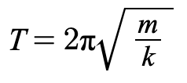

Dati Sensore
Log
—
—
—
—
—
Registrazione
Avvia / Interrompi
La costante elastica K è il parametro che definisce la rigidità di un corpo elastico, come una molla. Essa quantifica la relazione di proporzionalità diretta tra la forza applicata e la deformazione risultante, come stabilito dalla Legge di Hooke: F = −K · Δx. Un valore elevato di K indica una maggiore resistenza alla deformazione.
💡 Metodo Statico: Prima di far oscillare il sistema, possiamo calcolare K misurando di quanto si allunga la molla sotto l'effetto di un peso noto (m).
Linea altezza
Mostra min/max orizzontale
Quando la forza di richiamo è proporzionale allo spostamento (come nella nostra molla), il sistema oscilla con un moto armonico semplice. Il grafico visualizza esattamente questo moto: la sua forma d'onda è una sinusoide. La posizione del peso in funzione del tempo è:
⚙️ Periodo e Frequenza: Il Periodo (T) è il tempo per compiere un'oscillazione completa. La cosa interessante è che il periodo non dipende dall'ampiezza, ma solo dalle caratteristiche fisiche del sistema:

Picchi verticali
Segna i picchi sul grafico